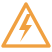
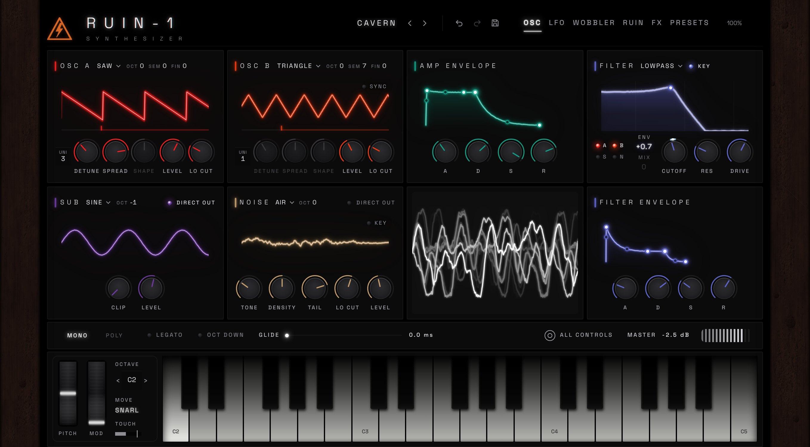

RUIN-1 SynthesizerA dark, cinematic synthesizer for producers. Saturated, tape-worn and alive, built for the sound that sits in a dark room.

Audio demo
Hear RUIN-1
in action
Reese basses ground through the RUIN chain, tape-worn pads, crackle and air, and the mod wheel pushed hard.
Watch full demo
Inside RUIN-1
Every page,
moving
Swipe through the instrument.
01 / 06
Sound source
Two oscillators with up to seven unison voices, a clean sine sub on its own path and fourteen noise textures, into the filter and its envelope. A live scope shows what comes out.
System requirements
Get set up
Light on the machine: about 3% CPU per voice, no GPU, no account, and it never goes online.
Windows
- Windows 10 or later (64-bit)
- Any 64-bit CPU
- 4 GB RAM
- Under 25 MB disk space
- VST3
macOS
- macOS 11 or later
- Apple Silicon or Intel
- 4 GB RAM
- Under 25 MB disk space
- AU, VST3 — coming